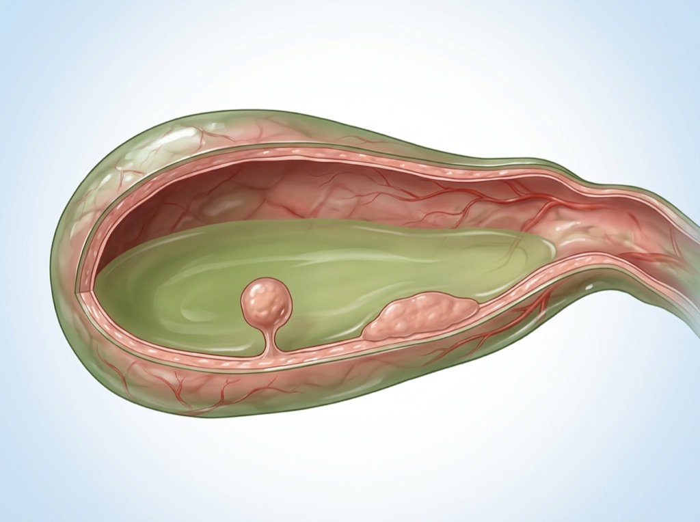

담낭 폴립, 어떻게 추적할까요?
핵심은 크기 · 모양 · 담낭벽 · 성장 변화입니다. 대부분은 양성이지만, 기준에 맞춰 놓치지 않고 관찰합니다.
처음 발견되면 확인할 4가지

왼쪽 자루형 · 오른쪽 넓게 붙은 폴립
| 항목 |
결과지에서 볼 것 |
| ① 크기(mm) |
가장 긴 지름. 1cm는 10mm입니다. |
| ② 모양 |
자루가 있는 폴립은 상대적으로 안심되는 모양이 많지만 크기 변화는 확인합니다. 벽에 넓게 붙은 폴립은 성장·담낭벽 변화를 더 주의해서 봅니다. |
| ③ 담낭벽 |
두꺼워짐·불규칙이 있으면 더 주의합니다. |
| ④ 변화 |
이전보다 커졌거나 모양이 달라졌는지 비교합니다. |
크기와 의심 소견에 따른 추적 방향
| 크기 |
의심 소견 |
방향 |
| 6mm 미만 |
없음 |
관찰 정기 추적은 권하지 않습니다. |
| 있음 |
추적 초음파 추적을 권합니다. |
| 6–9mm |
없음 · 50세 미만 |
정기 추적 1년마다 초음파, 5년간 |
| 있음(50세 미만) 또는 50세 이상(소견 없음) |
밀착 추적 첫 1년은 6개월마다, 이후 4년은 1년마다 초음파 |
| 있음 · 50세 이상 |
개별 상담 수술 또는 초음파 추적(첫 1년 6개월마다, 이후 1년마다) 중 상담해 정합니다. |
| 10–14mm |
없음 |
개별 상담 수술 또는 초음파 추적(첫 1년 6개월마다, 이후 1년마다) 중 상담해 정합니다. |
| 있음 |
수술 권고 수술이 가능한 상태라면 담낭절제술을 권합니다. |
| 15mm 이상 |
크기 자체로 해당 |
수술 권고 수술이 가능한 상태라면 담낭절제술을 권합니다. |
* 의심 소견 = 폴립 옆 담낭벽 두꺼워짐, 벽에 넓게 붙은 모양, 추적 중 뚜렷한 성장. 6–9mm 폴립이 5년간 변화가 없으면 추적 중단을 고려할 수 있습니다. 실제 간격은 영상 소견·나이·위험인자를 보고 진료실에서 정합니다.
수술 상담이 필요한 신호 · 왜 초음파로 추적하나요
 수술 상담이 필요한 신호 수술 상담이 필요한 신호 |
초음파로 추적하는 이유 |
- 15mm 이상이거나, 10–14mm에 의심 소견이 동반될 때
- 추적 중 분명히 커져 10mm 또는 15mm 경계를 넘을 때
- 벽에 넓게 붙은 모양, 담낭벽 두꺼워짐·불규칙이 보일 때
- 다른 원인을 배제해도 담낭 관련 증상이 지속될 때
- 원발성 경화성 담관염(담도에 염증·흉터가 생기는 병)이 있거나, 혈액 종양표지자 CA 19-9가 오르거나, 영상에서 암이 의심되면 개별 전문 진료
|
- 담낭 폴립의 1차 평가는 복부초음파입니다.
- CT/MRI가 작은 폴립을 항상 더 잘 보는 것은 아니며, 암이 의심되거나 초음파가 불충분할 때 선택적으로 고려합니다.
- 방사선 없음 · 반복 비교 쉬움 · 작은 변화 관찰
|
 검사 전후 체크
검사 전후 체크
| 검사 전 |
결과를 볼 때 |
- 8시간 금식 후 검사하면 담낭이 잘 펴져 더 정확합니다(‘복부초음파 검사 전 준비 안내’ 참고).
- 가능하면 같은 병원에서 비교하거나 이전 결과지를 가져오세요.
|
- 결과지의 크기·모양·담낭벽·추적 권고를 확인하세요.
- 통증은 폴립만으로 단정하지 않고 담석·위장질환도 함께 봅니다.
|